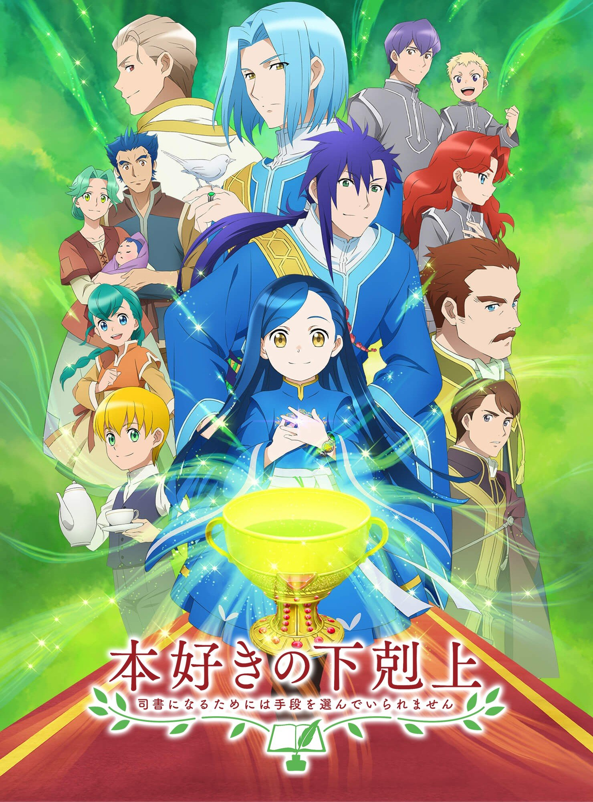
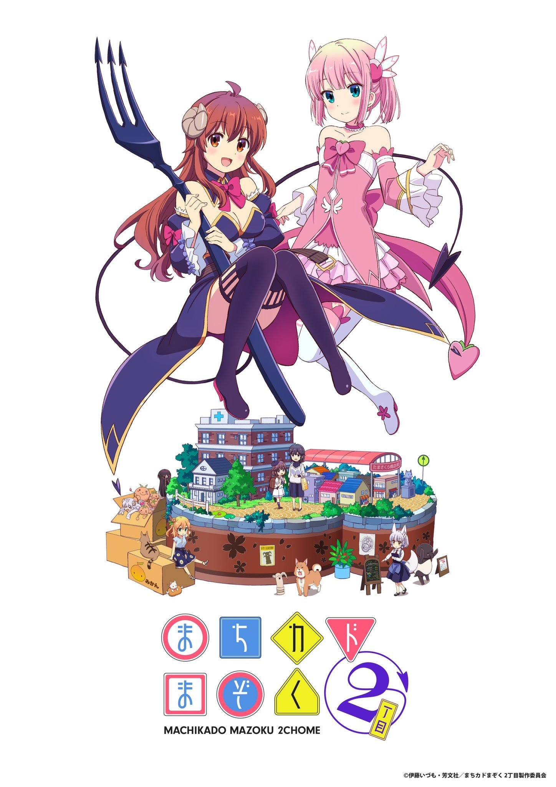
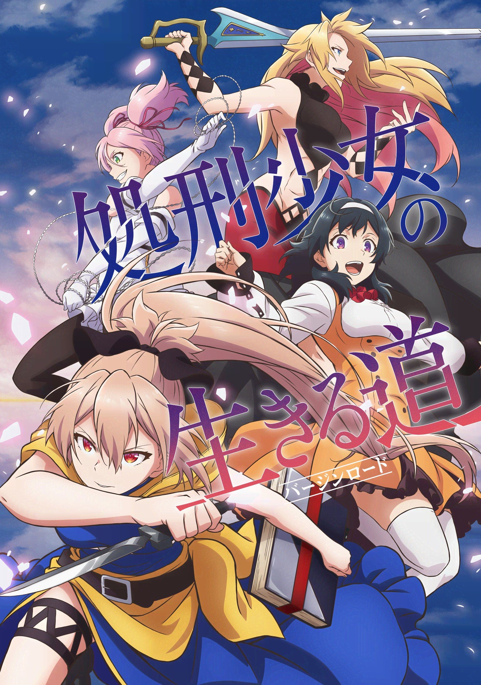
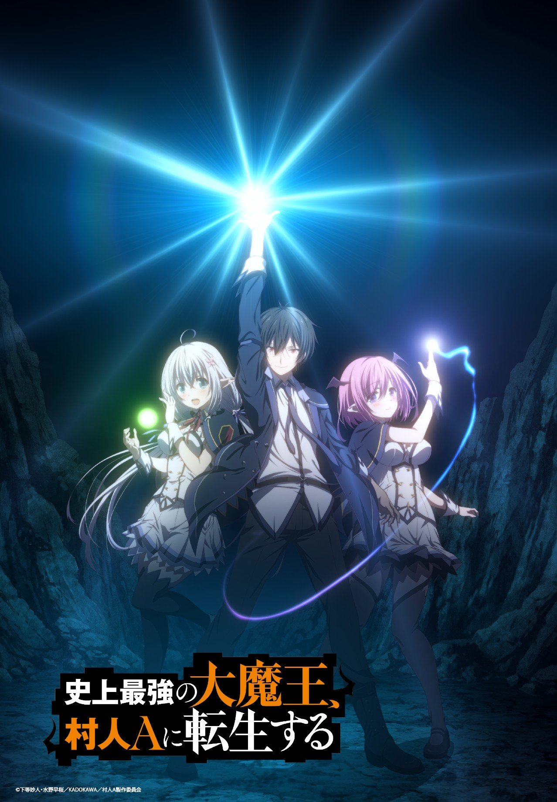
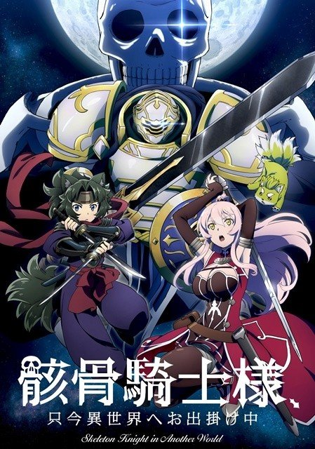

主观判断警告!
本文纯粹出于笔者个人主观经验与感受而成，如有任何不同意见欢迎友善交流讨论
没有提到的作品笔者没看，或不符合笔者个人兴趣，或观看价值较低
另外，本文不提供动画简介，对感兴趣的动画可以点击「更多信息」访问Bangumi 番组计划网站的详情页面
であいもん（相合之物）
推荐度：95分
以和果子作为线索讲述人与人之间情感的故事。全篇的故事温馨，故事发生的地点是京都，充满古典气息的京都，加上传统的和果子，再加上人物的京都腔，营造了温馨祥和、远离喧嚣的宁静感。我想，就算是不喜欢平淡的日常番的人，只要听到op曲「菫」响起，他那颗焦躁的心也能立刻平静下来，投入到剧情之中。
女主角一果是一个小女孩，但由于她家庭的原因，她身上有着超出一般孩童的成熟。或许正是这样的反差让一果更加惹人怜爱。
全篇充满了人类美好情感的展现，相信本作能为您因世间的冷漠而疲惫的灵魂带来一丝治愈。
更多信息：であいもん | Bangumi 番组计划
关键词：治愈，日常
かぐや様は告らせたい-ウルトラロマンティック-（辉夜大小姐想让我告白-超级浪漫-）
推荐度：95分
辉夜大小姐第三季，高质量校园恋爱喜剧，第三季结尾没有断章，在很舒服的地方结束。辉夜大小姐本身就是与传统恋爱故事不同的作品，剧情相当有趣，人设也让人印象深刻。虽然原作漫画越来越烂了，但动画的内容、制作、配音、配乐等方面都是一流的，非常值得一看。
动画表现力很强，配乐质量高，本季中辉夜和会长的恋爱进程也有了极大的进展。在各个方面都属上乘，推荐观看。
更多信息：かぐや様は告らせたい-ウルトラロマンティック- | Bangumi 番组计划
关键词：恋爱，搞笑，青春，校园
SPYxFAMILY（间谍过家家）
推荐度：90分
本作讲述了间谍黄昏为了某个绝密任务而组建家庭，在这期间发生的家庭喜剧故事。主要是过家家，间谍、杀手、超能力者只是让千篇一律的家庭日常变得更有趣的调味品而已。如果是想看的是「间谍」的故事，那或许这部动画并不能满足您的需求。
总之是轻松的日常类型喜剧，主要看点是阿尼亚卖萌。
更多信息：SPY×FAMILY | Bangumi 番组计划
关键词：家庭喜剧，日常，萌
本好きの下剋上～司書になるためには手段を選んでいられません～ 第3期（小书痴的下克上～为了成为图书管理员而不择手段～ 第3部）

推荐度：80分
本作第一季观感还是相当不错的，转生后渴望看书而做出种种努力，同时又有身为平民却又贵族魔力的凤傲天设定。但是本季动画基本没什么有趣的剧情，没有读过原作，但是第三季的结局应该是一个比较大的转折，后面的剧情或许会更加精彩，如果还有第四季我认为值得期待。
更多信息：本好きの下剋上～司書になるためには手段を選んでいられません～ 第3部 | Bangumi 番组计划
关键词：异世界，奇幻，日常，穿越
まちカドまぞく 2丁目（街角魔族 2丁目）

推荐度：80分
与小书痴一样，街角魔族第二季不如第一季有趣。在第一季中，出现了如怪力魔法少女，超高速变身读秒，体弱笨蛋魔族之类的有趣设定，但是到了第二季还是在重复第一季的这些梗，缺乏新意，难免有些审美疲劳。不过对于轻百合来说剧情也不算过于白开水，老粉可以一看。
更多信息：まちカドまぞく 2丁目 | Bangumi 番组计划
关键词：日常，搞笑，轻百合
理系が恋に落ちたので証明してみた。r=1-sinθ（ 理科生坠入情网故尝试证明 r=1-sinθ ）
推荐度：75分
和上面的两部一样，第二季不如第一季，问题同样是缺乏新意。原本「理科思维在恋爱环境下的使用，理性与感性的错位导致的荒诞而引发的喜剧效果」是这部作品有别于其他恋爱作品的亮点，比如说明明是去游乐园约会，正常人只是规划好时间地点，打扮好自己就去了，但是他们却要把游乐园的游玩当做NLP问题求解，这种反差正是剧情有趣的地方。
在这一季中没有让我看到这些亮点，或者说相比上一季要少很多。不仅如此，这一季还莫名其妙讲了奏的故事，并且这个故事并不有趣，出现在这个作品里我觉得是个败笔。
总体来说这一季虽然不出彩，但也没有特别大的雷，看过第一季的动画党再看第二季补剧情问题不大。
更多信息：理系が恋に落ちたので証明してみた。r=1-sinθ | Bangumi 番组计划
关键词：恋爱，搞笑，校园
処刑少女の生きる道（处刑少女的生存之道）

推荐度：65分
稍有些猎奇的轻百合，第一话看下来还挺有意思，但是后续就稍有些无聊了，介于百合贴贴和战斗之间，在我看来有些不爽。而且就这一季来说，感觉剧情基本没有多少推进，作为动画党来说很可能观感会比较差。话虽如此，作画和人设还不错，当做爆米花动画看看养眼也不算差。
关键词：奇幻，战斗，极轻微百合
其他龙傲天
纯粹的爆米花龙傲天，不用带脑子看就完事了。
勇者、辞めます（勇者，辞职不干了）
史上最強の大魔王、村人Aに転生する（史上最强的大魔王转生为村民A）

史上最強の大魔王、村人Aに転生する | Bangumi 番组计划
骸骨騎士様、只今異世界へお出掛け中（骸骨骑士大人异世界冒险中）
